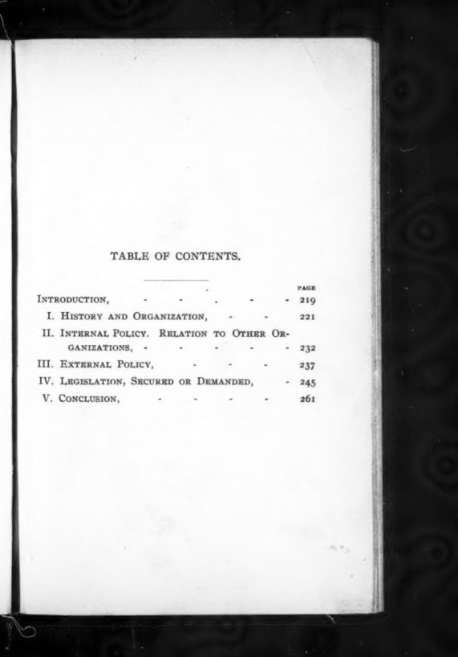

Aldrich, 1898: como a American Federation of Labor se organizou
Leitura: 12 min
Morton A. Aldrich descreve a federação sindical fundada em 1881: autonomia de cada ofício, campanha das oito horas, boicotes, leis pedidas ao Congresso e a recusa em aderir ao socialismo.


Em 2 de setembro de 1889, comícios pela jornada de oito horas reuniram trabalhadores em 420 cidades e vilas americanas. Eram o ponto alto de um ano inteiro de preparação da American Federation of Labor, que levantara a força e as finanças de cada sindicato, distribuíra folhetos e marcara quatro dias de manifestações. No ano seguinte, a federação escolheu um só ofício para a greve, o dos carpinteiros, e o financiou com uma contribuição obrigatória dos filiados.
A história está em The American Federation of Labor, de Morton A. Aldrich, nº 4 do terceiro volume dos Economic Studies, de agosto de 1898. O autor observa que só existiam dois relatos, ambos breves, sobre a federação, um de Samuel Gompers e outro de P. J. McGuire, e que suas fontes são os anais das convenções anuais, as atas taquigráficas dos debates de 1890 e 1894 sobre o socialismo, o jornal oficial American Federationist, mensal desde 1894, e oito folhetos da entidade. Agradece a dirigentes como Gompers, McGuire, McNeill e Strasser. A federação, informa, nunca publicou estatísticas exatas de filiados; as estimativas que ouviu iam de 350 mil a 700 mil.
De onde veio a federação?
Antes da Guerra Civil, sindicatos locais de vários ofícios já haviam formado uniões nacionais, cada uma restrita a um ofício. O primeiro organismo a reunir ofícios diversos em escala nacional foi a National Labor Union, fundada em Baltimore em 1866, que defendeu um órgão federal do trabalho e as oito horas para funcionários públicos. Sua última convenção foi em 1872, quando, nas palavras de Aldrich, cedeu à tentação fatal da política e lançou David Davis, de Illinois, à Presidência. Entre a crise de 1873 e 1881, meia dúzia de ordens secretas disputaram os trabalhadores; todas, salvo os Knights of Labor, tiveram vida curta.
A federação nasceu de uma convenção convocada em 2 de agosto de 1881 em Terre Haute, Indiana, por duas ordens secretas que, segundo McGuire, queriam criar uma nova ordem para suplantar os Knights of Labor. Os delegados sindicais barraram o plano e convocaram outra convenção, em Pittsburgh, no mesmo ano, onde fundaram a Federation of Organized Trades and Labor Unions of the United States, que em 1886 passou a chamar-se American Federation of Labor.
Como se governava uma federação de sindicatos?
A federação reunia apenas sindicatos, nunca indivíduos, de quatro tipos: locais, nacionais, centrais urbanas e federações estaduais. Sua política constante foi fazer das uniões nacionais de cada ofício a unidade de poder, com autoridade total sobre os sindicatos locais. Os ferroviários, com cinco sindicatos numa federação à parte, e os pedreiros eram as principais ausências; Aldrich calcula que provavelmente mais da metade dos sindicalizados continuava fora.
Os filiados, diz o autor, não eram homogêneos: havia artesãos prósperos, com mensalidades altas e seguros, e trabalhadores comuns que mal podiam pagar. As diferenças de raça entre os membros eram grandes, com o elemento alemão especialmente forte; exceto quanto aos negros, escreve Aldrich, disputas raciais eram desconhecidas. Oficialmente, a federação recusava a linha de cor e admitia negros livremente, embora fossem barrados em alguns sindicatos do Sul. Havia também todas as crenças políticas, inclusive um grupo de socialistas declarados.
O governo era federal no sentido americano: tudo o que a constituição não delegava ao centro ficava com os sindicatos, que mantinham autonomia sobre fundos, greves e benefícios. O único poder de coerção da federação era suspender ou expulsar um filiado. Para Aldrich, ao limitar o próprio poder, ela venceu a desconfiança dos sindicatos e evitou uma massa de dissensões internas. Nas convenções, o voto crescia menos que o tamanho do sindicato: um voto para mil membros, dois para 4 mil, três para 8 mil, quatro para 16 mil e cinco para 32 mil; centrais urbanas e federações estaduais tinham um voto.
Com o tempo, os poderes financeiros cresceram. A constituição revista de 1887 permitiu ao conselho pedir contribuições voluntárias para greves aprovadas; em 1889, uma emenda autorizou uma taxa obrigatória de até dois centavos por semana, durante cinco semanas, por membro das uniões nacionais. A minoria protestou que isso feria o caráter federal da entidade, mas prevaleceu a necessidade de fundos para as oito horas.
O que a federação fazia dentro do mundo sindical?
Mais de trezentos organizadores, sem salário, trabalhavam para unir os sindicatos de cada ofício e fundar novos. Ano após ano, Gompers recomendava mensalidades altas e fundos de benefícios para doença, funeral, invalidez e desemprego: foram os sindicatos sem fundos que se desfizeram na depressão de 1893. A convenção de 1896 decidiu que nenhum sindicato local ficaria filiado com mensalidade inferior a 50 centavos. A federação também se recusava a reconhecer mais de uma união nacional por ofício, porque os sindicatos rivais, observa Aldrich, gastavam mais energia brigando entre si do que defendendo seus membros.
O grande rival eram os Knights of Labor, existentes desde 1869, que admitiam qualquer pessoa, exceto advogados, banqueiros e donos de bar, organizavam trabalhadores de ofícios diferentes nas mesmas assembleias e concentravam o poder no centro. Na convenção de 1881, quase metade dos delegados representava assembleias dos Knights. A convivência azedou quando os Knights aceitaram trabalhadores que os sindicatos haviam declarado desleais e chegaram a organizar substitutos de grevistas. Para Aldrich, a vitória da federação foi a do princípio de que só os membros de um ofício devem governar os assuntos desse ofício.
Que armas a federação usava contra os patrões?
Boicotes, rótulo sindical e greves eram de iniciativa de cada sindicato, mas a federação lhes dava apoio. Desde 1887 publicava listas de empresas boicotadas, depois sob o título “We don’t patronize”; desde 1893 concentrava o boicote em poucas firmas, sempre depois de ouvir a empresa, e Gompers relatava que um terço dos casos se resolvia sem chegar à lista. O rótulo sindical, criado pelos charuteiros em 1874, marcava os bens feitos em condições aprovadas pelos sindicatos; em 1897, a federação endossava os rótulos de 27 uniões nacionais. Quanto às greves, os relatórios do presidente pediam discernimento: não parar com organização fraca, mercado em queda ou caixa vazio.
A jornada de oito horas era a bandeira comum. A convenção de 1884 marcou uma greve geral para 1º de maio de 1886; das quatro uniões nacionais que aderiram, charuteiros e tipógrafos alemães venceram, os marceneiros de móveis aceitaram nove horas, e os carpinteiros conquistaram as oito horas em sete cidades e as nove em 84. Em 1890, a estratégia mudou para um ofício de cada vez.
Os folhetos da campanha, de Lemuel Danryid, George Gunton e George E. McNeill, sustentavam que menos horas trariam salários maiores. Aldrich registra que os escritores da federação rejeitavam a tese, cara a muitos economistas, de que o trabalhador faria em oito horas o mesmo que em dez: diziam que cada um produziria menos, que seria preciso empregar mais gente e que isso elevaria os salários e reduziria o desemprego causado pela máquina. A federação nunca se opôs às máquinas; queria para os trabalhadores uma parte maior do ganho, em salários, condições e horas.
“Quer trabalhe por peça, quer trabalhe por dia, / reduzir as horas aumenta o pagamento.” (Whether you work by the piece, or work by the day, Decreasing the hours increases the pay.)
Que leis os sindicatos pediam?
Aldrich considera a busca de legislação a atividade mais importante da federação, ao lado da unificação sindical. Ela redigia projetos e fazia trabalho pessoal junto a deputados, sobretudo na comissão do trabalho da Câmara, e também barrava projetos que julgava nocivos. No plano estadual, endossava leis contra o pagamento em mercadorias, pelo pagamento frequente de salários, pela responsabilidade do patrão por acidentes causados por colegas do empregado, pela proibição de demitir por filiação sindical e contra o contrato que obrigava o trabalhador a não se sindicalizar. No plano político, apoiava o voto secreto, a reforma do serviço público, a eleição direta de senadores, a iniciativa e o referendo, o ensino obrigatório, a compra do telégrafo e do telefone pelo governo e caixas econômicas postais.
Um grupo de leis, diz o autor, pode ser classificado como tentativa dos trabalhadores de conter a concorrência do trabalho barato: limitar aprendizes, abolir o arrendamento de presos a empresas privadas, sobretudo em Alabama, Geórgia, Kentucky e Tennessee, e proibir a imigração de trabalhadores chineses e de estrangeiros contratados no exterior. Em 1897, num referendo entre os filiados, 84% dos votantes apoiaram restringir mais a imigração nos moldes do teste de alfabetização do projeto Lodge. Segundo Aldrich, o argumento sindical era que os imigrantes, especialmente quando de outra raça e de padrão de vida mais baixo, engrossavam os desempregados, dificultavam a organização e seguravam os salários; uma minoria se opunha à restrição.
A federação apoiava a arbitragem voluntária e combatia a compulsória, inclusive a lei ferroviária aprovada em maio de 1898, por temer que trabalhadores fossem obrigados a trabalhar contra a vontade; preferia a negociação direta. A desconfiança do governo crescia com o uso de tropas em greves e, sobretudo, das injunções judiciais. Em 1896, a convenção recomendou desestimular o alistamento na guarda nacional; em 1897, pediu emendas que tirassem dos tribunais o poder de anular leis aprovadas pelo povo; e pediu isenção dos sindicatos na lei antitruste Sherman.
Por que a federação recusou o socialismo?
A federação nunca se ligou a partidos. A plataforma de 1881 pedia proteção plena à indústria americana, mas a convenção seguinte revogou o item; em 1893 apoiou a cunhagem livre de prata na razão de 16 para 1 e, em 1896, reafirmou-a sem endossar partido. Em 1890, por mais de três quartos dos votos, recusou filiar um ramo do Socialist Labor Party. Em 1894, a maioria rejeitou o item que propunha a propriedade coletiva de todos os meios de produção. Uns delegados eram contra o socialismo; outros, simpatizantes, votaram contra para evitar a saída de sindicatos que ameaçavam se desfiliar. Desde 1890, os socialistas somavam de um terço a um quinto dos delegados.
Na conclusão, Aldrich contrasta os trabalhadores da Alemanha, França, Austrália e até da Inglaterra, inclinados a partidos operários socialistas, com os americanos, que apostavam na ação sindical. O Socialist Labor Party tinha menos de 1% dos eleitores, mas ele vê crescer uma influência difusa de ideias socialistas. Os obstáculos à organização são maiores que na Inglaterra: território extenso, trabalhadores que mudam de lugar e, nas suas palavras, extremas diferenças de raça entre os trabalhadores. A favor da permanência estão o exemplo do congresso sindical britânico, existente desde 1868, líderes experientes como Strasser, cujo sindicato de charuteiros pagou mais de US$ 3 milhões em benefícios, e o fato de a federação ter evitado os três erros dos antecessores: segredo, centralização excessiva e ação política.
“O trabalhador americano é, acima de tudo, um homem ‘prático’.” (The American workingman is above all things a ‘practical’ man.)
Na minha leitura
Na minha leitura, o estudo de Aldrich é antes de tudo um estudo de desenho institucional. A federação sobreviveu onde a National Labor Union e as ordens secretas fracassaram porque resolveu um problema de coordenação sem exigir obediência: autonomia de cada ofício, voto que cresce menos que o tamanho, poder de coerção reduzido à expulsão e finanças mínimas. É o mesmo dilema de qualquer associação voluntária de membros desiguais, de cartéis a uniões monetárias: quanto poder dar ao centro sem provocar a saída dos maiores.
O capítulo das oito horas também me parece valioso como registro de um argumento econômico. Os folhetos da federação recusavam a tese da produtividade constante e apostavam na redistribuição do trabalho entre mais gente, a mesma intuição que reaparece sempre que se discute jornada menor contra desemprego. Aldrich expõe o raciocínio sem tomar partido, e o leitor percebe que o salário mais alto dependia de a demanda por trabalho não cair junto com as horas.
Glossário
- União nacional (national union)
- sindicato que reúne os sindicatos locais de um mesmo ofício em todo o país, chamado de internacional quando inclui o Canadá.
- Central sindical urbana (central labor union)
- conselho de delegados de todos os sindicatos de uma cidade.
- Sindicato federal (federal union)
- sindicato local criado pela própria federação para trabalhadores de ofícios ainda sem organização.
- Rótulo sindical (union label)
- marca aplicada a produtos feitos em condições aprovadas pelo sindicato do ofício.
- Boicote
- campanha para que trabalhadores e simpatizantes não comprem de uma empresa declarada desleal.
- Injunção
- ordem de um tribunal de equidade que proíbe ou impõe uma conduta, usada contra greves.
- Arrendamento de presos (convict lease)
- contrato pelo qual o estado alugava o trabalho de presos a empresas privadas.
- Teste de alfabetização
- exigência de saber ler para admitir imigrantes, proposta no projeto Lodge.
Fontes
- Introduction (pp. 219–220). Internet Archive (número completo, PDF)
- I. History and Organization (pp. 221–231). Internet Archive (número completo, PDF)
- II. Internal Policy. Relation to Other Organizations (pp. 232–236). Internet Archive (número completo, PDF)
- III. External Policy (pp. 237–244). Internet Archive (número completo, PDF)
- IV. Legislation, Secured or Demanded (pp. 245–260). Internet Archive (número completo, PDF)
- V. Conclusion (pp. 261 ss.). Internet Archive (número completo, PDF)
- Número completo digitalizado (domínio público): Internet Archive.
Documento em domínio público (EUA, publicado antes de 1931), via JSTOR Early Journal Content e Internet Archive. Resumo e comentário do autor deste site, sem afiliação com a American Economic Association. Encontrou um erro? Escreva: a correção é publicada no próprio texto, com data.
← ES 16 · Carver, 1898: Ohio terceiriza a caça aos bens sonegados ES 18 · Bogart, 1898: como moravam os operários de Yonkers →